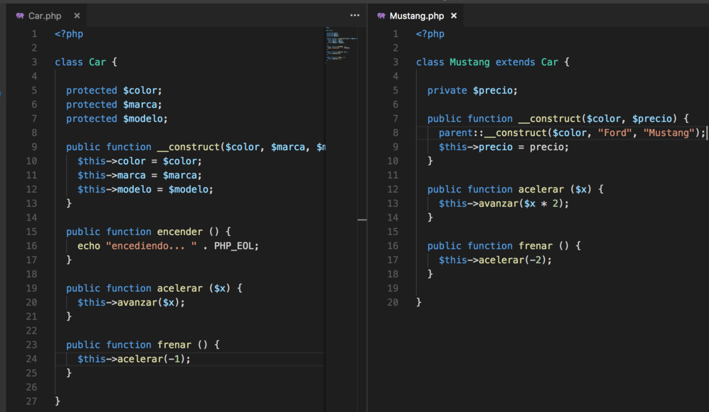
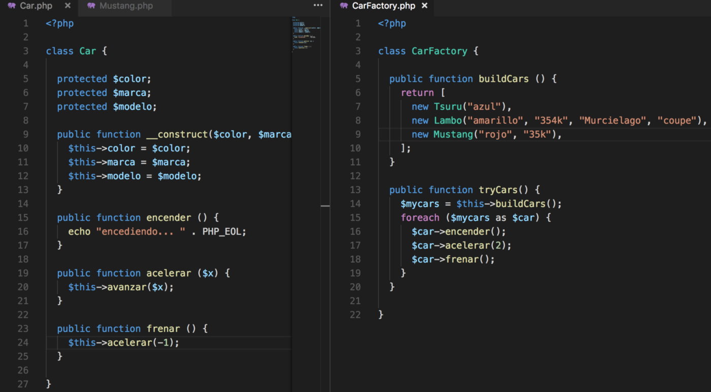

La programación Orientada a objetos se define como un paradigma de la programación, una manera de programar específica, donde se organiza el código en unidades denominadas clases, de las cuales se crean objetos que se relacionan entre sí para conseguir los objetivos de las aplicaciones.
La programación Orientada a objetos (POO) es una forma especial de programar, más cercana a como expresaríamos las cosas en la vida real que otros tipos de programación.
Pensar en términos de objetos es muy parecido a cómo lo haríamos en la vida real. Por ejemplo vamos a pensar en un coche para tratar de modelizarlo en un esquema de POO. Diríamos que el coche es el elemento principal que tiene una serie de características, como podrían ser el color, el modelo o la marca. Además tiene una serie de funcionalidades asociadas, como pueden ser ponerse en marcha, parar o aparcar.
Pues en un esquema POO "el coche" sería lo que se conoce como "Clase". Sus características, como el color o el modelo, serían propiedades y las funcionalidades asociadas, como ponerse en marcha o parar, serían métodos.
La clase es como un libro, que describe como son todos los objetos de un mismo tipo. La clase coche describe cómo son todos sus coches, qué propiedades tienen y qué funcionalidades deben poder realizar. A partir de una clase podemos crear cualquier número de objetos de esa clase. Un coche rojo que es de la marca Ford y modelo Fiesta, otro verde que es de la marca Seat y modelo Ibiza.
Por poner otro ejemplo vamos a ver cómo modelizaríamos en un esquema POO una fracción, es decir, esa estructura matemática que tiene un numerador y un denominador que divide al numerador, por ejemplo 3/2.
La fracción será la clase y tendrá dos propiedades, el numerador y el denominador. Luego podría tener varios métodos como simplificarse, sumarse con otra fracción o número, restarse con otra fracción, etc.
A partir de la definición de una fracción (la clase) podremos construir un número indeterminado de objetos de tipo fracción. Por ejemplo podemos tener el objeto fracción 2/5 o 3/9, 4/3, etc. Todos esos son objetos de la clase fracción de números enteros.
Estas clases se podrán utilizar en los programas, por ejemplo en un programa de matemáticas harás uso de la clase fracción y construirás muchos objetos de tipo fracción para hacer cuentas diversas. En un programa que gestione un taller de coches utilizarás la clase coche y se instanciarán diversos objetos de tipo coche para hacer las operativas.
En los lenguajes puramente orientados a objetos, tendremos únicamente clases y objetos. Las clases permitirán definir un número indeterminado de objetos, que colaboran entre ellos para resolver los problemas. Con muchos objetos de diferentes clases conseguiremos realizar las acciones que se desean implementar en la funcionalidad de la aplicación. Además, las propias aplicaciones como un todo, también serán definidas por medio de clases. Es decir, el taller de coches será una clase, de la que podremos crear el objeto taller de coches, que utilizará objetos coche, objetos de clase herramienta, objetos de clase mecánico, objetos de clase recambio, etc.

Como habrás podido entender, las clases son declaraciones de objetos, también se podrían definir como abstracciones de objetos. Esto quiere decir que la definición de un objeto es la clase. Cuando programamos un objeto y definimos sus características y funcionalidades en realidad lo que estamos haciendo es programar una clase. En los ejemplos anteriores en realidad hablábamos de las clases coche o fracción porque sólo estuvimos definiendo, aunque por encima, sus formas.
Los objetos son ejemplares de una clase cualquiera. Cuando creamos un ejemplar tenemos que especificar la clase a partir de la cual se creará. Esta acción de crear un objeto a partir de una clase se llama instanciar (que viene de una mala traducción de la palabra instace que en inglés significa ejemplar). Por ejemplo, un objeto de la clase fracción es por ejemplo 3/5. El concepto o definición de fracción sería la clase, pero cuando ya estamos hablando de una fracción en concreto 4/7, 8/1000 o cualquier otra, la llamamos objeto.
Para crear un objeto se tiene que escribir una instrucción especial que puede ser distinta dependiendo el lenguaje de programación que se emplee, pero será algo parecido a esto.
miCoche = new Coche();
Cuando decimos abstraer la realidad suena a algo confuso y poético a la vez. Si bien programar requiere de mucha creatividad, el nombre de este concepto está mas loco de lo que en realidad es. Pongamos de ejemplo que queremos representar un punto usando POO. ¿Qué es lo que tiene un punto? Bueno matemáticamente (¿geométricamente?) lo puedes representar en un plano si tienes sus coordenadas x y y. Entonces va, ya tenemos sus propiedades, una x y una y. Ahora queremos una línea, bueno una línea consta de dos puntos.
Con esto podemos tener figuras geométricas, las cuales tendrán 3 o mas líneas. No solo tendrán esas propiedades, si no que también tendrán comportamientos como obtener la base, la altura, el área, girar la figura, crecer o encoger, etc.
A esto es a lo que llamamos abstraer la realidad, de un objeto real, decidir cuales serán sus propiedades y comportamientos en nuestra clase. En el clásico ejemplo del inventario de una tienda, ¿qué es lo que tiene un producto?, bueno pues tiene nombre, categoría, marca, y precio.

Una vez entendido el concepto de Objeto, es necesario diferenciar entre lo que es una clase y un objeto.
Una clase es machote o patrón con el que vas a construir objetos, es el archivo donde estás viendo la definición de la clase con sus variables (propiedades) y sus métodos (comportamientos).
Un objeto, o instancia de la clase, vive en el stack de memoria, es una estructura de datos que fue construida usando el constructor de la clase y tiene un estado, es decir sus propiedades tienen valores. En el ejemplo del punto, podemos saber el valor de x y de y.
La herencia en POO nos permite hacer varias cosas: no repetir código, organizar nuestros objetos, y usar polimorfismo, siendo éste último (IMHO) el punto mas importante para decidir si vale la pena usar herencia.
Pero en sí ¿qué es la herencia? Bueno se refiere a tener una super clase con atributos y métodos muy genéricos. Y después varias sub clases mas especificas. Por ejemplo, en el libro de certificación de Java tienen un ejemplo muy bueno para recordarlo. La clase padre (super clase) es un carro, tiene lo básico que todo carro va a tener: marca, color y modelo. La clase hija (sub clase) es un Mustang la cual, aparte de tener atributos mas específicos, no va acelerar y frenar igual que cualquier otro carro. Sin embargo, Mustang ya no tiene que definir marca, color, y modelo, ni el método encender, porque ya lo tiene, ya que lo heredó:
Este es un concepto un poco complicado de explicar, pero es importante repasarlo, así que haré lo mejor posible para explicarlo. Usemos el ejemplo del carro y el Mustang. ¿Para qué nos sirve saber que un Mustang es un Carro también? No es solo para aprovechar los métodos que ya tiene Carro, probablemente es porque en otra parte del código, vamos a estar construyendo carros, no importa de que subclase sean (Mustang, Tsuru, Lambo), tú sabes que van a tener un método encender, acelerar y frenar.
Observemos el método tryCars, estoy llamando los métodos de Car, no importando cuál sea su implementación, es decir qué instancia es la que realmente vive en memoria. Sé que tendrán esos métodos, porque extienden de Car. O implementan Car, si Car fuera una interfaz.